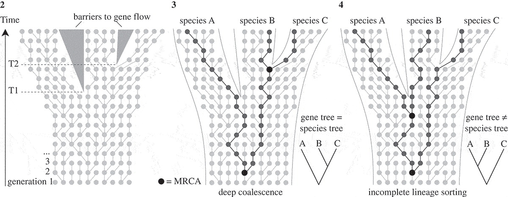

Multi-Species Models
Taming the Beast 2018
Posterior probability

adapted from Plessis et al., Trends in microbiology, 2015
Population priors allow us to calculate the probability of a tree given a tree generating process and a set of parameters
- Birth-Death (Forward in time).
- Coalescent (Backward in time).
How the coalescent process generates trees
N=8


- Probability that 2 lineages share a common ancestor in the previous generation $=\frac{1}{N(=8)}$
Changes in population sizes are reflected in the shape of trees
The smaller a population, the more likely individuals are to coalesce.
Drummond et al., Trends in Ecology and Evolution, 2003
The structured coalescent allows to account for population structure


Gene trees denote the evolutionary relationship of genes that evolve within populations of species

Mallo et. al, Phil. Trans. R. Soc. B, 2016
MSC models the history of genes as a separate coalescent process in each species

Leliaert et. al, European Journal of Phycology, 2014
What is the prior of the species tree
- Birth-Death?
- Coalescent?
Why are we using a coalescent model for the gene and a birth-death model for the species trees?
- Coalescent models assume large population sizes and small sampling fraction.
- Birth-Death models can account for large sampling fractions.
Some StarBeast2 features:
- Species Clocks.
- Sampling through time
Isolation-with-Migration models

Hey, Molecular Biology and Evolution, 2010
Shameless Advertising: Species history of great apes using AIM

Müller et. al, BioRxiv, 2018